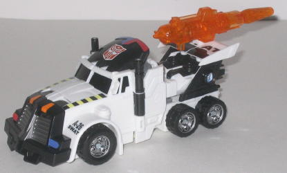
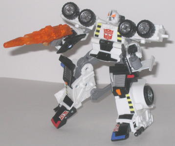
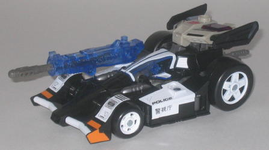
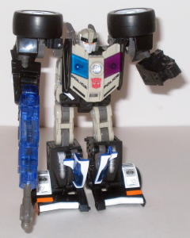

Checkpoint
& Prowl (SWAT Redecos; K-Mart Exclusive)
Checkpoint
& Prowl (SWAT Redecos; K-Mart Exclusive)
Price
: $20 (U.S.)
Overall Rating
: 6.7
(NOTE: Because this set is a repaint, this
is not a full-blown review. This mainly covers any changes made to the
set and the color scheme, and merely compares them to Energon Rodimus and
Prowl. For a review on the Rodimus-- Checkpoint's mold-- read his review
here
.
For a review on Energon Prowl-- SWAT Prowl's mold-- read his review
here
.)
Checkpoint


Allegiance
: Autobot
Size
: Deluxe
Difficulty of Transformation
: Medium
Difficulty of Powerlinx Transformation
:
Medium
Color Scheme
: White, black, gray,
and some transparent orange, silver, light orange, red, bright yellow,
dull blue, and glossy dark blue-green
Powerlinx ports
: 2 (1 of them on
gun)
Individual Rating
: 7.5
Checkpoint is a truck
painted up as a SWAT vehicle-- which is appropriate, given that this is
the Autobot SWAT Team, according to the box. As you'd expect, white, gray,
and black are the main colors, and although it's not a bad color scheme,
it would be rather boring by itself. Luckily for us, Checkpoint's got oodles
of paint apps- some nice red and blue headlights, a (BRIGHT) yellow and
black "caution" stripe pattern on the sides of the hood, and a SWAT decal
printed on the rear fender, among other paint apps in vehicle mode. In
robot mode, the colors mostly carry over, with a few more caution stripes
on his chest, in addition to an Autobot symbol that is takes up half of
the chest. (Read: TOO BIG.) Nearly all of the paint apps are different
from Checkpoint's predecessor, Rodimus, which is quite surprising for a
store exclusive. I like it when effort is put into exclusives-- it's a
nice change when compared to many of the more recent exclusives. Overall,
it's a nice scheme, with only a few small problems (the overly large Autobot
symbols and the almost neon yellow), but it doesn't quite measure up to
Rodimus' awesome orange, red, and gold scheme.
No mold changes have
been made to Checkpoint, so he can still Powerlink with Prowl and all that
jazz.
Checkpoint Tech Specs:
Strength: 8.0
Intelligence: 8.0
Speed: 9.0
Endurance: 7.0
Rank: 8.0
Courage: 9.0
Fireblast: 8.0
Skill: 8.0
Prowl


Allegiance
: Autobot
Size
: Deluxe
Difficulty of Transformation
: Easy
Difficulty of Powerlinx Transformation
:
Medium
Color Scheme
: Black, white, pale
tannish gray, gray, and some light orange, silver, transparent dark blue,
transparent aquamarine, and transparent fuchsia
Powerlinx ports
: None
Individual Rating
: 5.9
SWAT Prowl has a color
scheme that is a bit of a throwback to
G1 Prowl
,
who was a police car. The black and white, again, work rather well with
the toy, with there being a pretty decent amount of paint apps to keep
those two colors from getting boring. Some of the paint apps are even decals,
such as the "headlight" paint apps put on the front bumper of the vehicle
mode. However, unlike Checkpoint, Prowl is only a partial repaint-- many
of his robot bits, such as the upper legs and head, are colored exactly
the same as they were on the previous form of Energon Prowl. And they're
rather plain colors, so it's not like I'm particularly enthralled that
Hasbro kept the colors. Many of the paint apps, even if they are different
colors, are still mostly the same as they were on Prowl's previous version
too. It's not nearly as bad as many of the Universe exclusive repaints,
but it still shows a bit of laziness on the designer's part. Still, the
black and white color scheme does fit a bit better on the toy than the
previous Prowl's blue.
No mold changes have
been made to SWAT Prowl.
SWAT Prowl Tech Specs:
Strength: 7.0
Intelligence: 8.0
Speed: 10.0
Endurance: 5.0
Rank: 7.0
Courage: 8.0
Fireblast: 7.0
Skill: 8.0
An Autobot SWAT Team
is a nice idea-- unfortunately, neither Checkpoint and Prowl are taken
from particularly good Energon molds. Checkpoint himself is a nice, original
repaint, but he doesn't quite match up to Energon Rodimus. SWAT Prowl is
slightly better color-wise than his predecessor, but it still doesn't erase
that fact that it's the worst mold of the Energon line. Even though the
colors do certainly mesh better on these guys when they're Powerlinked
as opposed to their previous paint jobs, I'd still, overall, recommend
Energon Rodimus & Prowl over these guys. But even then, there's quite
a few Transformers molds that are more worthy of your hard-earned dollar
than these two.
Review by Beastbot
Back to Transformers:
Energon Index